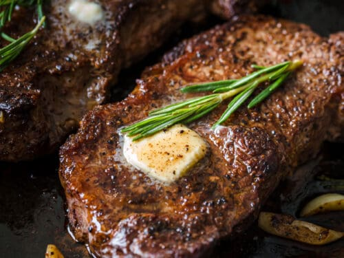

Home
Search
Profile
Steak

Ingredients
Steak
Olive oil
Salt & Pepper
Instructions
Add the steak to a very hot pan
Cook for 4 minutes
Take out of the pan and leave to rest for at least 4-5 minutes before serving